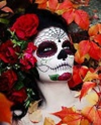

FESTIVIDADES DEL DIA DE MUERTOS
¿Quen se celebra?
El Día de los Fieles Difuntos.
- El color de la muerte en el México prehispánico es el amarillo. Por ello la flor de cempasúchil es utilizada tradicionalmente en la ofrenda del Día de Muertos.
- Algunos de los sitios más atractivos para visitar durante el Día de Muertos por el colorido y la emotividad con que llevan a cabo ésta tradición son Janitzio, Mixquic y Xochimilco.
- La práctica de pigmentar con color rojo el azúcar que cubre el pan de muerto fue idea de los españoles como una respuesta simbólica al rechazo de los sacrificios humanos que realizaban las culturas prehispánicas en honor a sus dioses.
el 1 de noviembre es dedicado al alma de los niños y el 2 de noviembre a la de los adultos.
- Ofrendas como bienvenida
- Iluminando el camino de regreso a casa
- Calaveras literarias

